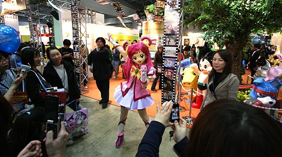
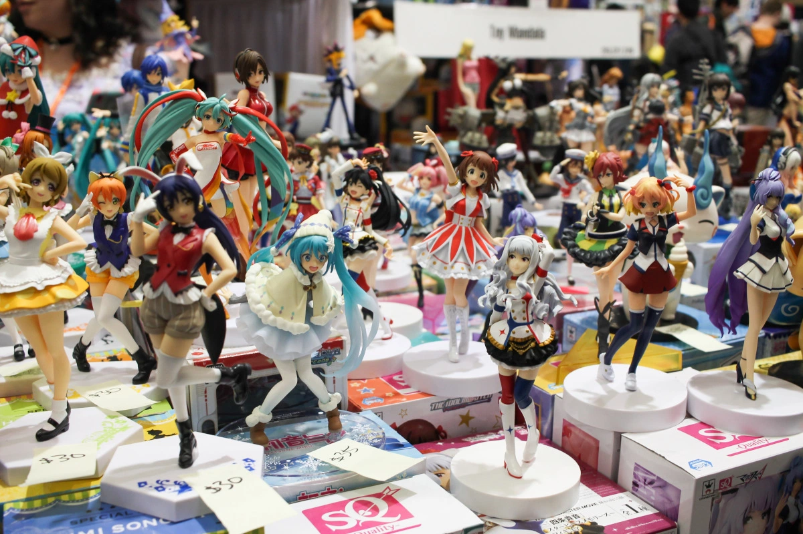

Events
A few manga and anime grand events are held in the course of a year. In particular, the AnimeJapan (formerly known as Tokyo Anime Fair), held annually at Odaiba's Big Sight convention center, is one of the largest animation related events in the world. Another noteworthy event is Comiket, a huge comic book fair which attracts hundreds of thousands of people. It is held biannually, also at Big Sight in Tokyo.
 Festivals
There are countless local festivals (matsuri) in Japan because almost every shrine celebrates one of its own. Most festivals are held annually and celebrate the shrine's deity or a seasonal or historical event. Some festival are held over several days.
An important element of Japanese festivals are processions, in which the local shrine's kami (Shinto deity) is carried through the town in mikoshi (palanquins). It is the only time of the year when the kami leaves the shrine to be carried around town.